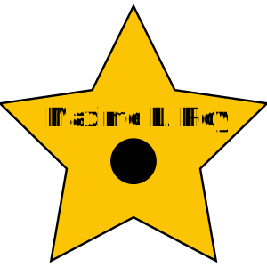

Pour cet exercice, vous devrez vous créer votre propre étoile ⭐️ sur le Hollywood Boulevard grace au pouvoir de SVG!
Aperçu du résultat 👇
Matériel
Pen de départ
Couleurs 🎨
#e96ea7
#f7b32b
Requis Illustrator
Créez un fichier Illustrator d’une dimension de 100x100px.
Utilisez l’outil de forme afin de tracer une étoile jaune 🟡 avec une bordure noire couvrant l’ensemble de votre canevas.
Choisissez une typographie et inscrivez votre nom par-dessus l’étoile. Une fois terminé, vectoriser votre texte.
Ajoutez un cercle noir au centre de l’étoile, sous votre nom.
Pensez à renommer adéquatement chaque calque de votre fichier (cette étape vous simplifiera grandement la vie pour la suite).
Ajustez la dimension de votre canevas à son contenu afin de retirer l’espace vide superflu.
Exportez votre SVG en fichier ou en code, selon votre préférence, et optimisez-le via SVGOMG afin de simplifier son contenu.

Requis web
Collez dans la section HTML du Pen de départ le code fourni par SVGOMG.
Si vous avez une balise style, copiez son contenu dans la section CSS de votre Pen et effacez cette balise.
Remarquez comment votre SVG prend toute la largeur de l’aperçu tout en restant toujours parfaitement net. Faites en sorte que votre étoile ait une largeur correspondant à 50% de celle de la page et qu’elle s’affiche à 50px du haut de celle-ci.
Déterminer quels éléments correspondent à quoi dans le code HTML en fonction des noms que vous avez donnés dans Illustrator. Au besoin, vous pouvez modifier les ids ou même ajouter des classes.
Ciblez l’étoile en CSS et changez sa couleur de fond afin qu’elle devienne rose et que sa bordure devienne jaune, comme les étoiles du Hollywood Boulevard.
Changez ensuite la couleur de fond du texte, ainsi que du cercle afin qu’ils deviennent jaunes eux aussi.
Au survole de l’étoile, changez la couleur de sa bordure afin qu’elle devienne blanche et faites en sorte que l’opacité du cercle soit réduite à 75% seulement.
Notes de cours 📚
SVG
Scalable Vector Graphics